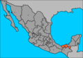

De: La Frikipedia, la enciclopedia extremadamente seria.
De: La Frikipedia, la enciclopedia extremadamente seria. De: La Frikipedia, la enciclopedia extremadamente seria.

|
ATENCIÓN Este artículo peca de Chucknorritis aguda al abusar del chiste más viejo del mundo (Innombrable). Su autor piensa que todo en este mundo se puede arreglar con patadas giratorias y/o voladoras y atenta contra el Segundo y/u Octavo mandamiento. |
| De la serie Países del planeta tierra: | |||||
| Pejelandia o Chocoslovaquia | |||||
|---|---|---|---|---|---|
| |||||
| Lema: "Todo lo que camina, corre o vuela, pa'la cazuela!" | |||||
| Himno: "No quiero trabajá" versión de Chicoché
| |||||
| 
| |||||
| Capital | Villa York | ||||
| Mayor ciudad | Villa York | ||||
| Lenguas oficiales | Chocoslovaco | ||||
| Gobierno | Tribal a lo Rambo coreano | ||||
| Tabasterco Mayor | Chupatapa | ||||
| Área | Pantano sindicalizado | ||||
| Población | -300 cada año por inundaciones y otros -7,000 fallecimientos anuales por webones | ||||
| Moneda | cacao | ||||
| Zona horaria | -6 | ||||
| Dominio Internet | hhh.AMLO.com | ||||
| Código telefónico | | ||||
Dicen que Tabasco (en lengua local se pronuncia Tabajko) se creó cuando Chuck Norris se aventó una miada después de una peda en Cancún. Dicen también, que cuando los veracruzanos empezaron a extenderse en territorio, corretearon a garrotazos y zapes a los odiados enemigos de las tribus caníbales wajakas, pero al llegar al Río Tonalá, no pudieron continuar al ver que todo era pantano lleno de cocodrilos, pejelagartos, pochitoques, guaos, chiquiguaos, pollodrilos, toloques, espoques, andrésmanueles, sindicalistas, perredistas y otras alimañas y reptiles muy peligrosas. Los veracruzanos pensaron que al fin se desharían de tan peligrosos enemigos los caníbales wajakas... Sólo para corroborar espantados cientos de años después, que los caníbales wajakas habían evolucionado al nivel 3.0 tabajterco reloaded. Ante semejante amenaza, poco se podía hacer, por lo que decidieron crear un mounstruo mutante más poderoso que Elba Esther Chuki Gordillo: El Tío Fide. Dotado de una trompa más larga que pejelagarto, colmillo más incisivo que tigredientedesable, y garras más peligrosas que las de Wolverine, y con una maquiavélica dotación de malévolas neuronas priístas, y al grito de "Ahorita estoy en toda la pinche plenitud del poder", sabiéndose líder mayor de los Zetas, mandó a sus fieles escuderos lamewebs 2.3 La Gorda Duarte y Fella Gándara al ataque. La Gorda Duarte gritó con su estentórea y poco masculina voz, y al unísono ambas elefantas saltaron sobre el Puente Tonalá, derrumbándolo para siempre en las profundas y tenebrosas aguas, y amenazando a los tabastercos con darles una pellizcada jarocha de web0z, para dejarlos con la misma voz de que La Gorda Duarte, y tirarles el otro puente para aislarlos del resto del planeta, con apoyo de los chiapanacos comechangos quienes amenazaron con aventarles a La Comadante Jamona y el agua de las 397,284 presas que tiene su territorio. Despavoridos, los mutantes caníbales tabastercos retornaron a sus pantanos, jurando rascarse los awakates hasta que les sangraran como sacrificio al Dios-Peje, y cobrar venganza contra Pemex, porque ir a Veracruz o Chiapas a vengarse les daba flojera.
Cuenta con VillaYork como Capital, conocida como la Venecia de AMLO. Otra ciudad importante, es Villa Benito Juárez, misma que cuenta con el honroso primer lugar mundial en homosexuales por centímetro cuadrado. Comalcalco, es la primera productora mundial de Ingenieros Industriales, aunque de todos ellos no hacen uno mediano que sepa contar hasta 15 de 5 en 5; se salva porque es la tierra bendita que vió nacer a una estrella de la música culta: Laura León, la soprano conocida como "La Tesorito". Nacajuca es otro privilegiado lugar, donde se preserva puro el linaje caníbal aborigen; sus ejemplares semi-humanos son inconfundibles, porque brincan descalzos (son genéticamente incapaces de usar zapatos, o cualquier cosa que les cubra las extremidades inferiores, de las que tienen 4) enseñando los calzones cuando ganan concursos baratos de canto televisivo. Por su agraciado color, no se distinguen en la oscuridad, excepto cuando abren los ojos. Su lenguaje no ha podido descifrarse totalmente, sólo se sabe que de 10 palabras que dicen, 25 son groserías (cuando se les pregunta por qué son tan mal hablados, siempre responden: 'quevergavasé'.
Un poderoso chamán, llamado Evarijto, ex-taxista y ex-maestro, derrotó localmente a AMLO gracias a los poderes místicos que le otorgó el mismo Dios Tláloc (dios de la Laguna de las Ilusiones) al crear la luz, y así mandó un super rayo cósmico-mágico-musical de luz. Gracias a esto, Evarijto pudo otorgar el poder a los tabasqueños de poder oler la luz, cultivar agua en caso de una invasión de reptiles mutantes como Tortugas Ninja y el poder de hacer sindicatos en cada cuadra, calle, colonia, pueblo o familia; también les otorgó un sensor GPS para detectar y ubicar todo ente vivo o no vivo; este poder lo han combinado con su altamente evolucionado sistema digestivo, que les permite comer cualquier cantidad de sustancias y entes repulsivos "que ni los chinos se comen" (Fox dixit).
Con el fin de capacitar a la poblacion para las inundaciones, el Virrey Kimiko repartió copias piratas de la pelicula "Water World" de Kevin 'Sheen-gas' Kostner, para que se intenten adaptarse a la nueva escenografía de Tabajko; tambien contrató a los mejores nadadores a nivel mundial como Fernando Platas, Los Guardiamarigüas de la Bahía de Tecolutla, Ver., Wili y Keiko las ballenas buena onda, Chabelo 'El Inmortal' y a los miembros de A.L.I.M (Asociación Mexicana de Lancheros de Isla Mujeres).
Actualmente el virreinato se encuentra en estado de "emergencia crítica" (sabias palabras del ex-tatanka Andréj Granié, al huir con las bolsas repletas de millones, botín obtenido gracias a las inundaciones). El plan original era hacer el Golfo de México más grande para devolverle su belleza natural, y de paso deshacerse de la gran plaga de tabastercos; se envió un cohete chingatosférico para romper las presas, se inyectaron partículas de pozol radiactivo a las nubes tabajkeñas y asi se logró que cayera un diluvio Marca Acme®. Desafortunadamente el Buey-Tlatoani Presidente de México, vió la pelicula de Titanic, y como la mayoría de los tabasqueños se parecen a Leonardo Dicaprio, el señor Presidentito se conmovió y decidio frenar el proyecto de destruccion masiva de los aborígenes tabajkeñoj, pero ya era demasiado tarde.
Entre los próceres de la patria tabasterca, el estado tiene un combatiente de la influenza llamado Miguel Andrade (el Rambo de Villa York), éste será el unico que sobreviva a esta enfermedad ya que es como la pelicula de Will Smith "Soy leyenda". Lo que hace que este tipo sobreviva es una poderosa exoarmadura de Tsuru modificado con 700 hp que le ganó a su buen amigo Dominic Toretto en una carrera(Ese dia Toretto andaba pedo por que a quien se le ocurre retar a Miguel Andrade a una carrera?)a ver quien cruzaba Huimanguisho en 5.7s y Miguel Andrade apostó su pointer, así que Toretto tuvo que darle el Tsuru y desde ese día la influenza no ha podido alcanzar a Miguel Andrade después pasada la influenza hará un comercial de Tecate que diga "Por los que sobrevivieron a la influenza, Tecate por ti" (el por ti no iria ya que ese wey va a ser el único vivo en el planeta), aunque se sospecha que a los 10 días morirá de Cirrosis.
Todo tabajterco que se precie 'estudia' en la UJarvard, donde sin saber leer, escribir, y mucho menos hablar español, inmediatamente se gradúan de Ingenieros Industriales, para terminar en una empresa petrolera con palancas. Como último recurso, les queda integrarse a uno de los 274,957.25 sindicatos creados para no trabajar y cobrarle al gobierno y a Pemex derechos por tránsito, afectación, respiración, por mirarlos, por existir y por escuchar ruidos propios de Tabajko. Aún si la flojera les gana (cosa natural en todo ente tabajterco), le queda la posibilidad de asegurarse un empleo en la empresa paraestatal tabajkeña propiedad del Peje Consorcio Pastrana.
Autor(es):